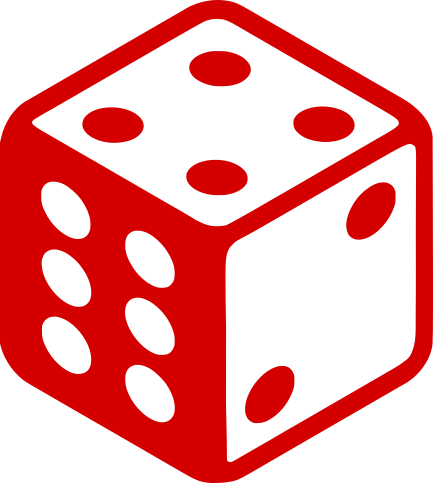

<div [ngSwitch]="page">
	<app-food-form
		*ngSwitchCase="'landing'"
		(startEvent)="startEventHandler($event)">
	</app-food-form>
	<app-loading class="loading-animation" *ngSwitchCase="'loading'"></app-loading>
	<div *ngSwitchCase="'spinner'">
		<app-spinner (winnerEvent)="startWinHandler($event)"></app-spinner>
	</div>
	<p *ngSwitchDefault>Ended up somewhere bad?</p>
</div>

<div *ngIf="result.length >= 6 && page == 'spinner'">
  <div *ngFor="let i of createRange(6)" class="location-card">
      
      <button *ngIf="!rerolled" class="die-button" mat-button>
        
      </button>
      <button *ngIf="rerolled" class="die-button" mat-button>
        
      </button>
      {{ result[i].name }}
    </div>

</div>
